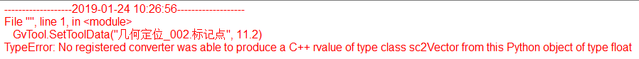

脚本工具使用的编程语言是Python，Python是一种简单易学功能强大的编程语言。脚本工具现阶段支持了获取、设置工具参数，获取、设置变量管理中变量的参数，显示GUI到视图窗口等功能。
详细的Python学习请参考专业书籍或者网上教程。
Python编程规范参考：
https://zh-google-styleguide.readthedocs.io/en/latest/google-python-styleguide/python_style_rules/
https://www.python.org/dev/peps/pep-0008/
Python编程语言语句结尾无分号，Python表示代码块范围使用缩进来实现，不像某些高级语言使用花括号{}来表示。因此在编写Python代码时，需要注意代码缩进，Python中严禁使用Tab键来实现缩进，必须使用空格，缩进4个空格表示一个层级。
Python中布尔类型变量为True False注意首字母大写。
Python条件判断：
python
a = 1
b = 0
if a > b:
print("a > b")
elif a == b:
print("a == b")
else:
print("a \< b")
Python中for循环：
python
for i in range(10):
print(i)
Python中while循环：
python
i = 0
while i< 10:
print(i)
i = i + 2
Python中逻辑运算符：
逻辑与：and
逻辑或：or
逻辑非：not
```python findline_result4 = GvTool.GetToolData(“找线工具004.执行结果”) findline_result5 = GvTool.GetToolData(“找线工具005.执行结果”)
if findline_result4 and findline_result5: print(“找线工具004和找线工具005执行成功”) elif not findline_result4: print(“找线工具004执行失败”) ```
Python中位运算符：
按位与：&
按位或：|
按位异或：^
和工具相关的操作是通过GvTool对象来实现的。其中包括GetToolData，SetToolData，RefToolData。
GetToolData
GetToolData是用来获取工具参数的。例如获取几何定位的搜索坐标：
python
pos = GvTool.GetToolData("几何定位_002.搜索坐标")
SetToolData
SetToolData是用来设置工具参数的，如果通过SetToolData设置工具的某个参数，那么该参数严禁配置参数链，即禁止在数据链编辑对话框对该参数进行参数链接(双击工具弹出的对话框)。例如设置几何定位的接收阈值：
python
GvTool.SetToolData("几何定位_002.接受阈值", 0.8)
注意：如果设置工具参数时，设置的工具参数和传入的参数类型不匹配会产生错误，因此在设置工具参数时，需要传入对应类型的参数。

RefToolData
RefToolData获取的是工具参数的引用，将获取的参数绑定到变量，通过修改变量值可以直接修改对应的工具参数。该方式不推荐使用，由于获取到的是引用，因此使用RefToolData要特别注意，可能会有不小心修改了工具的参数，而你本意不是要修改参数。
当工具存在上下限参数时，如Blob工具的总像素数上/下限和结果个数上/下限，可使用如下方法进行设置：
方法1：直接使用新的上下限定值进行设置
python
#方法1：
#修改blob工具的总像素数上限（整型数值）
GvTool.SetToolData("Blob工具_001.总像素数上限",GvVisionAssembly.Limit_Int(1000))
#修改找线工具的直线变化角度上限（浮点数值）
GvTool.SetToolData("找线工具_003.直线变化角度上限",GvVisionAssembly.Limit_Double(10.0))
方法2：获取工具的上下限参数，并使用上下限参数的属性值进行设置
python
#方法2：修改blob工具的总像素数上限
upper = GvTool.GetToolData("Blob工具_001.结果个数上限")#获取blob工具的总像素数上限
upper.Value = 1000 #修改总像素数上限取值
upper.Enable = True #修改总像素数上限是否生效
GvTool.SetToolData("Blob工具_001.总像素数上限",upper)#设置blob工具的总像素数上限
和工具相关的操作是通过GvVar对象来实现的。其中包括GetVar，SetVar，RefVar(现阶段无效)。
获取变量
python
a = GvVar.GetVar("#L0")
设置变量
python
a = 50
GvVar.SetVar("#L0",a)
脚本工具可以向图像添加GUI，包括文本、矩形、圆形和十字等。每种GUI类型都包含一个GUI风格对象和一个对应的形状对象，例如用来显示矩形GUI的GsScriptGuiRect类型，包含两属性sScriptGuiStyle和rect，sScriptGuiStyle表示Gui的风格，rect表示显示的矩形。
对于要显示的Gui必须添加到Gui数组GcScriptGuiArray中，最后将Gui数组通过Gui代理设置到对应的视图，SetGraphicDisplay(“视图名”, Gui数组)。
设置Gui风格
Gui风格包含设置线形，线宽和颜色等，具体可以参考GsScriptGuiStyle文档。首先要定义一个GsScriptGuiStyle类型的变量，设置需要显示的GUI风格，GsScriptGuiStyle有默认初始值，只需设置需要的属性即可，例如和标签相关的属性不需要显示标签的话可以不设置。对于线型和线宽没有特殊要求也可以不设置。
```python
guiStyle = GvVisionAssembly.GsScriptGuiStyle() guiStyle.bVisible = False guiStyle.nLineStyle = 3 guiStyle.nLineWidth = 2 guiStyle.clrLineColor = [255,0,0] guiStyle.bLabelVisible = True guiStyle.strLabelFont = “宋体” guiStyle.lSizeFont = 10 ```
Gui对象
Gui对象以矩形为例，其他的类型可以参考对应的文档手册。
```python
guiRect = GvVisionAssembly.GsScriptGuiRect() rect0 = GvVisionAssembly.scRect(GvVisionAssembly.sc2Vector(100,100), GvVisionAssembly.sc2Vector(200,300)) guiRect.rect = rect0 guiStyle.strLabel = “矩形” #可以不设置 guiRect.sScriptGuiStyle = guiStyle #设置Gui风格 ```
设置Gui显示数组
Gui数组是用来存储所有需要添加到同一视图的Gui，这样方便将所有Gui一起添加到视图。
要往视图添加Gui，必须先添加到Gui数组，最终将Gui数组通过代理设置到对应的视图才可以显示。
```python guiArray.Add(guiRect)
GvGuiDataAgent.SetGraphicDisplay(“View-1”, guiArray) ```
消息报告可以通过ReportMessage函数实现，根据不同的消息报告类型，在对应位置生成消息，例如提示、警告、错误消息。消息报告类型通过GeMsgReportType来确定，具体内容可以参考相应文档。
```python
GvVisionAssembly.ReportMessage(str strMsg, GeMsgReportType eType, bool bIsForbid) ```
参考代码：
python
Genote = GvVisionAssembly.GeMsgReportType
noteType = Genote.eMRTFatalErr
GvVisionAssembly.ReportMessage("123", noteType, False)